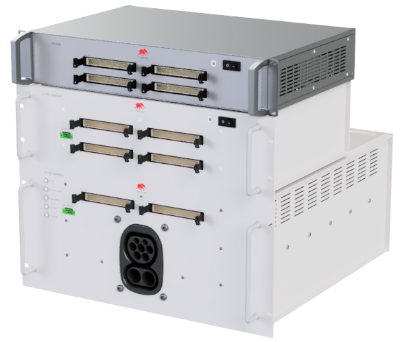

Safety Considerations and Requirements
General safety considerations, hardware requirements, and software requirements for safe operation of the HIL Electric Vehicle Charging Interface.
High Voltage Warning
Before turning on the device, make sure:
- The Mains voltage is correct (There are 2 versions of the power supply, for 120 V and for 230 V mains voltage, frequency can be either 50 Hz or 60 Hz in both cases). The operating mains voltage is printed on the back panel of the device.
Safe Operation Requirements
The HIL Electric Vehicle Charging Interface is a solution designed for continuous operation, provided the following operating conditions are met:
- Charger-Inverter Testing: Provide the capability to test charger-inverter systems for EVs, including performance evaluation, reliability testing, and compliance verification.
- Electrical and Mechanical Compatibility: Ensure compatibility with different types of charger-inverter systems, supporting various voltage, current, and power ratings.
- Simulation of Real-World Scenarios: Enable simulation of real-world driving conditions, charging scenarios, and grid interactions to assess the performance of charger-inverter systems under different operating conditions.
- Data Logging and Analysis: Provide data logging and analysis capabilities to capture, store, and analyze test results, enabling detailed performance evaluation and troubleshooting.
- Safety and Compliance: Ensure compliance with relevant safety standards, regulatory requirements, and industry best practices for charger-inverter testing.
- Documentation and Training: Provide comprehensive documentation, including user manuals, operation guides, maintenance procedures, and training materials to facilitate the operation and maintenance of the HIL Electric Vehicle Charging Interface.
Device Safety Guidelines
- When connecting signals, it is crucial to strictly adhere to instructions and standardized procedures to ensure reliable and safe operation of the device. It is especially important to comply with standards for medium voltage connections, such as IEC 62271, which define the technical characteristics and requirements for medium voltage equipment.
- Additionally, it is worth noting that the device is not intended for operation at temperatures below 5°C or above 40°C. Accordingly, adequate airflow within the rack enclosure and implementation of temperature control for the entire enclosure are necessary.
- Furthermore, the device must not be exposed to high humidity or dust, as this could compromise its operation and longevity.
- It is essential to provide free airflow from the sides of the P-HIL device and carefully design ventilation openings to prevent overheating and ensure optimal system operation.
| Operating Environment |
|
| Storage Environment |
|
Integration of C-HIL Connect and P-HIL Connect
The HIL Electric Vehicle Charging Interface solution consists of two separate devices, namely C-HIL Connect and P-HIL Connect. These devices are designed to work exclusively together and cannot operate independently. The interfaces are designed to work with HIL simulator devices.
The assembled rack, including the C-HIL Connect, P-HIL Connect, and a HIL Simulator device occupies 10U within a standard 19" rack mount enclosure (Figure 1). It is necessary to use a rack with a minimum depth of 600 mm in order to provide enough space for bending the output AC and DC signals on the back side of the P-HIL device.
